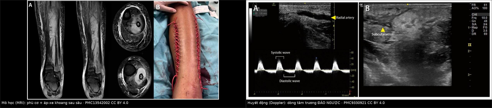
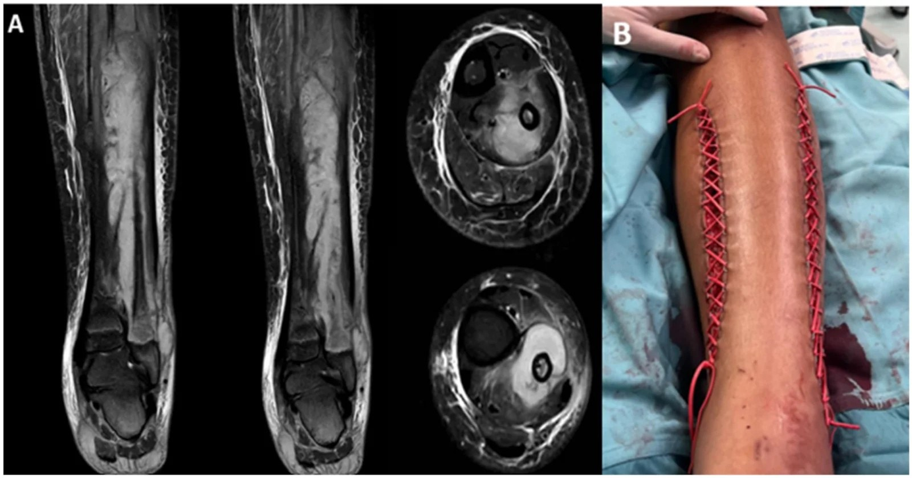
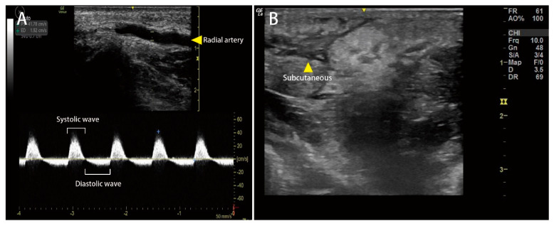
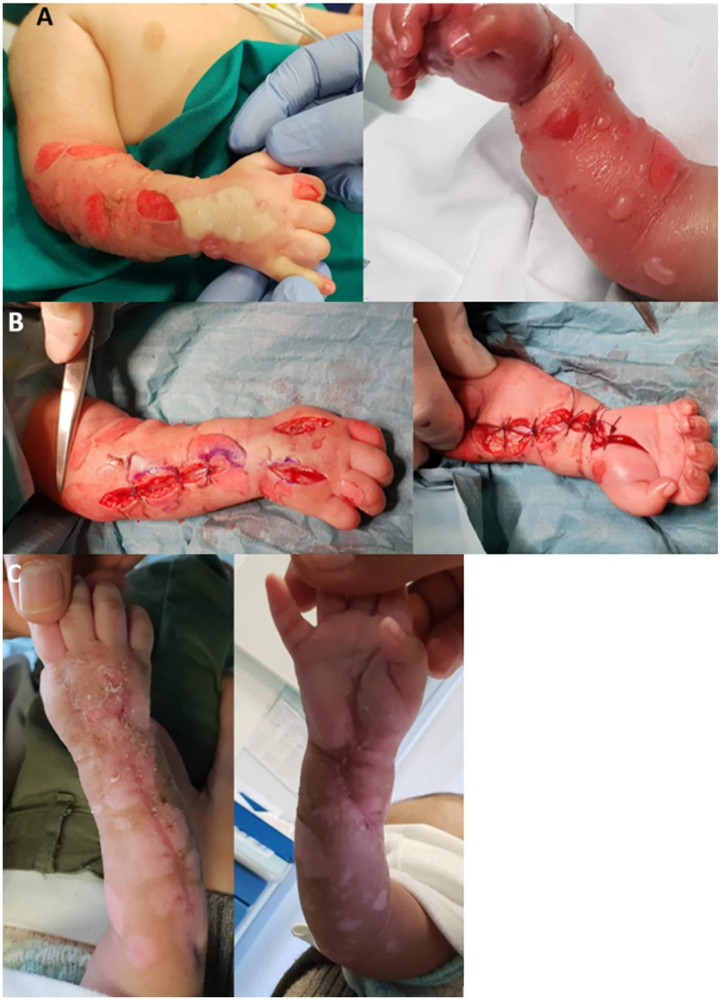

3125 — Hội chứng chèn ép khoang cấp ở trẻ (acute compartment syndrome, ACS): chẩn đoán bằng hiệu áp, không bằng "mất mạch"
Tags: pattern:phu-co-khoang pattern:giam-tuoi-mau-co pattern:dao-chieu-tam-truong pattern:mat-pho-dong-mach vung:chi-duoi vung:canh-tay anatomy:khoang-can-chi protocol:sieu-am-Doppler protocol:MRI-chi protocol:do-ap-luc-khoang protocol:XR-chi score:delta-pressure
Mức chắc chắn (certainty): tổng hợp y văn (literature synthesis) — ghép một tổng quan nhi khoa 2026 về ACS trẻ em (có ảnh MRI + ảnh lâm sàng sau mở cân, PMC13542002, CC BY 4.0), một ca Doppler dự báo ACS sau rắn cắn (Medicina 2022, PMC9330921, CC BY 4.0) và hai ca ACS chi trên sau can thiệp mạch (Cureus 2026, PMC13615642). Không có ca do nhóm tự chụp.
Câu hỏi thực hành: bé 9 tuổi gãy trên lồi cầu xương cánh tay kèm gãy cả hai xương cẳng tay cùng bên, đã nắn bột 6 giờ trước. Bé khóc không yên, đòi tăng liều giảm đau liên tục; mạch quay vẫn rõ, đầu chi hồng, SpO₂ bình thường. Câu hỏi: chờ thêm hay mở bột — và chụp gì bây giờ? Bài chốt ba quyết định: (1) "còn mạch" KHÔNG loại trừ ACS — mạch còn vì áp lực động mạch vẫn cao hơn áp lực khoang, trong khi tĩnh mạch và mao mạch đã sập; (2) chốt chẩn đoán là hiệu áp ΔP = huyết áp tâm trương − áp lực khoang, ngưỡng mổ ΔP < 30 mmHg, và ở trẻ có thể đã hoại tử cơ khi ΔP mới < 20 mmHg; (3) cắt bột/băng là can thiệp đầu tiên tại giường, không chờ chẩn đoán hình ảnh — cắt bột giảm 40–60% áp lực, cắt luôn lớp băng dưới giảm tới 80%.
1. Tổng quan bệnh học – cơ chế hình ảnh: vì sao mất tĩnh mạch trước, mất mạch sau
- Chuỗi sập theo thứ tự áp lực (giải thích toàn bộ bệnh cảnh): trong khoang cân kín, áp lực tăng → tĩnh mạch lympho và tĩnh mạch nhỏ (áp lực thấp ~10–15 mmHg) sập trước → ứ máu, phù thêm → mao mạch sập → thiếu máu cơ, trong khi động mạch (áp lực 80–120 mmHg) vẫn đẩy được máu → mạch mu chân/mạch quay vẫn bắt được. Vì vậy "mất mạch" là dấu hiệu MUỘN, xuất hiện khi ΔP gần bằng 0 — lúc đó cơ đã hoại tử.
- Công thức duy nhất cần nhớ: ΔP (delta pressure) = huyết áp tâm trương − áp lực khoang. Đây là áp lực tưới máu mao mạch thực tế, không phải áp lực khoang tuyệt đối.
- ΔP < 30 mmHg → ngưỡng mở cân (chuẩn người lớn, đã dùng cho trẻ).
- ΔP < 20 mmHg → trẻ có thể vẫn "im lặng" trong khi cơ đã thiếu máu (PMC13542002) — nghĩa là ngưỡng 30 mmHg ở trẻ là ngưỡng muộn, không phải ngưỡng sớm.
- ΔP < 40 mmHg → ngưỡng "hung hăng" được đề xuất cho nhóm nguy cơ cao ở trẻ, để cứu mô chưa hoại tử (PMC13542002).
- Áp lực khoang nghỉ bình thường: trẻ 6,0 mmHg vs người lớn 5,7 mmHg (PMC13542002) — chênh rất ít, nhưng huyết áp tâm trương của trẻ thấp hơn nên cùng một áp lực khoang, trẻ có ΔP nhỏ hơn; đây là lý do ngưỡng tuyệt đối 15 mmHg của Pedowitz (dành cho người lớn) KHÔNG dùng cho trẻ — đưa vào trẻ sẽ dương tính giả rất cao ở vận động viên nhỏ tuổi khỏe mạnh (PMC13542002).
- Vì sao thần kinh và cơ chết trước da: sợi trục không có dự trữ năng lượng và nhạy với thiếu oxy hơn nguyên bào sợi; cơ vân chịu được ~4 giờ thiếu máu ấm trước khi hoại tử không hồi phục, còn dây thần kinh ngoại biên chỉ 1–2 giờ đã mất dẫn truyền. Thứ tự biểu hiện lâm sàng vì thế là: đau tăng → dị cảm/giảm cảm → yếu cơ → mất mạch, và đau là dấu hiệu DUY NHẤT còn sớm.
- TẠI SAO trẻ khác người lớn — ba điểm định lượng:
- Áp lực khoang đạt đỉnh MUỘN hơn: khoảng cách từ chấn thương tới đỉnh áp lực có thể vượt 24 giờ ở trẻ, lâu hơn người lớn (PMC13542002) → một lần đo bình thường không loại trừ, phải đo lặp lại.
- Trẻ nhỏ không mô tả được đau: tăng nhu cầu giảm đau là dấu hiệu sớm nhất, xuất hiện vài giờ trước khi có thay đổi thần kinh–mạch (PMC13542002). Trẻ < 10 tuổi có nhóm nguyên nhân khác hẳn: tổn thương mạch, thấm dịch qua đường truyền, nhiễm trùng; trẻ ≥ 14 tuổi: chấn thương năng lượng cao, gắng sức, thể thao.
- Trẻ chịu được ΔP thấp mà không phàn nàn vì huyết áp nền thấp và mô non — đừng chờ trẻ "đau dữ dội" như mô tả trong sách người lớn.
- Dịch tễ định lượng (PMC13542002): tới 85% ACS do chấn thương, ~40% do gãy thân xương chày; gãy trên lồi cầu xương cánh tay + gãy cả hai xương cẳng tay cùng bên → nguy cơ ACS tuyệt đối 33%. ACS không do chấn thương (NFACS): mạch máu là nguyên nhân hàng đầu, 28%; nhiễm trùng ~10% (và 27% ở nhóm < 3 tuổi**); **thấm/thoát dịch qua catheter tĩnh mạch ngoại vi là nguyên nhân iatrogen hàng đầu**. NFACS bị chẩn đoán **trễ trung vị 48 giờ**, **hoại tử cơ 54%**, **hồi phục kém 56%** — so với **> 90% ở ACS do gãy xương.
2. Mẫu hình + chẩn đoán phân biệt theo khoang (Gamut)
- Mẫu hình cốt lõi: đau tăng không tương xứng + đau khi thụ động duỗi cơ trong khoang (passive stretch pain) ở một chi có yếu tố khởi phát rõ (bột/băng, chọc mạch, gãy xương, dịch thoát qua catheter, nhiễm trùng, rắn cắn) — kèm "mạch vẫn còn".
- Gamut theo khoang (khoang nào cũng có, nhưng khác tần suất và hệ quả):
- Cẳng chân — 4 khoang, nơi hay gặp nhất: trước (anterior) và sau sâu (deep posterior) là hai khoang bị bỏ sót nhiều nhất; sau sâu chỉ vào được bằng đường rạch phía trong (medial) — mở cân chỉ một bên da là mở thiếu.
- Cẳng tay — khoang gấp (volar) là khoang tối cấp: chèn ép kéo dài → co cơ Volkmann, biến dạng cổ tay, mất chức năng bàn tay; gãy trên lồi cầu + gãy cẳng tay cùng bên là bộ đôi kinh điển.
- Đùi: khoang lớn, dung tích lớn nên dấu hiệu đến muộn nhưng có sốc giảm thể tích do mất máu vào cơ; thường sau chấn thương nặng, đặt catheter động mạch đùi.
- Bàn tay/bàn chân: khoang nhỏ, nhiều khoang (bàn tay tới 10 khoang gian cốt); chọc mạch quay/mu chân và thấm dịch là nguyên nhân hay gặp ở trẻ.
- Cánh tay: sau chọc động mạch cánh tay hoặc băng ép quá chặt sau lấy máu.
- Gamut theo cơ chế ở trẻ (quan trọng hơn gamut theo vị trí):
- Tăng thể tích trong khoang: gãy xương, tụ máu, thoát dịch/thuốc qua catheter tĩnh mạch (extravasation), dịch truyền áp lực cao qua catheter nhỏ (Cureus 2026, PMC13615642), chảy máu sau chọc mạch, rắn cắn.
- Giảm thể tích khoang: bột bó kín, băng ép, garo, tư thế kê chi không đúng trong mổ.
- Thành khoang cứng hơn: sẹo bỏng, xơ hóa sau xạ, cân cơ dày ở trẻ vận động viên.
- Mnemonic 6 P (và thứ tự thời gian — điểm hay bị dạy sai): Pain (sớm, tăng khi duỗi thụ động) → Pressure (căng khoang) → Paresthesia (dị cảm) → Pallor → Paralysis (muộn) → Pulselessness (muộn nhất, thường không bao giờ có). Ba chữ P cuối là dấu hiệu của chi sắp mất, không phải dấu hiệu để chẩn đoán.
3. Bảng so sánh phân biệt (ma trận đối chiếu)
| Thực thể (entity) | Hình ảnh điển hình | Chốt vào (rule-in) | Chốt loại (rule-out) | Gợi ý xác nhận |
|---|---|---|---|---|
| Chèn ép khoang cấp (ACS) | X-quang: gãy xương/bột; siêu âm Doppler: mất phổ tâm trương, dòng tâm trương ĐẢO NGƯỢC (DRAF), phù dưới da kiểu "sỏi cuội"; MRI: cơ tăng tín hiệu T2/STIR + không ngấm thuốc ở vùng hoại tử | ΔP < 30 mmHg (trẻ: < 40 mmHg nếu nguy cơ cao) + đau khi duỗi thụ động + khoang căng cứng | ΔP ≥ 30 mmHg đo đúng kỹ thuật, lặp lại bình thường, không đau khi duỗi thụ động | Đo áp lực khoang lặp lại; cắt bột/băng trước khi đo lại |
| Viêm mô tế bào / viêm cơ (cellulitis, myositis) | Phù mô mềm lan ngoài khoang, da nóng đỏ, không tôn trọng giới hạn cân; MRI: phù cơ + ngấm thuốc lan tỏa, có thể áp-xe | Sốt + ban đỏ lan rộng + CRP/bạch cầu tăng, phù vượt giới hạn khoang | Khoang căng cứng + đau khi duỗi thụ động + ΔP thấp → không phải chỉ viêm mô tế bào | Siêu âm/ MRI; đo ΔP khi nghi ngờ |
| Huyết khối tĩnh mạch sâu (DVT) | Tĩnh mạch không đè xẹp, không có phổ; phù toàn chi, tím | Phù đều cả chi + đau bắp chân + yếu tố nguy cơ huyết khối | Khoang căng cứng khu trú + đau khi duỗi thụ động → nghĩ ACS | Siêu âm ép (compression US); D-dimer |
| Tắc động mạch cấp (thrombosis/embolism) | Mất phổ hoàn toàn cả tâm thu; chi trắng, lạnh, mất mạch thật sự | Mất mạch + chi trắng lạnh đột ngột + rung nhĩ/chấn thương mạch | Mạch còn + chi hồng ấm → không phải tắc động mạch đơn thuần | CTA/ DSA; Doppler |
| Chấn thương động mạch do chọc mạch (pseudoaneurysm, AVF, tụ máu) | Giả phình: túi ngấm thuốc thì động mạch, giữ hình thì muộn; AVF: tĩnh mạch ngấm SỚM; tụ máu: khối hỗn hợp âm | Khối đập theo mạch + tiếng thổi + chọc mạch gần đây | Không có khối mạch máu → ACS do nguyên nhân khác | Doppler màu + CTA; đây là nguyên nhân song hành, không loại trừ ACS |
| Tiêu cơ vận (rhabdomyolysis) | Không có hình ảnh khoang đặc hiệu; MRI có thể phù cơ lan tỏa | CK tăng rất cao, myoglobin niệu, AKI | Khoang căng cứng khu trú + ΔP thấp → ACS thật, không chỉ tiêu cơ | CK, myoglobin, điện giải; đừng để CK cao làm bỏ qua ΔP |
| Rách cơ / tụ máu trong cơ | Siêu âm: khối hỗn hợp âm–tăng âm trong bụng cơ, không có phổ bất thường | Đau khu trú sau gắng sức/chấn thương nhẹ, ΔP bình thường | ΔP < 30 mmHg → không phải chỉ tụ máu | Siêu âm lặp lại 6–12 giờ; MRI nếu chưa rõ |
| Chèn ép khoang mạn khi gắng sức (CECS) | Áp lực chỉ tăng sau gắng sức, hồi phục khi nghỉ; không có tổn thương cấp trên MRI | Đau khi chạy, hết khi nghỉ, tái diễn nhiều tháng, áp lực nghỉ bình thường | Đau liên tục + ΔP thấp khi nghỉ → ACS cấp | Đo áp lực trước/sau gắng sức; không mổ cấp cứu |
| Phản ứng tại chỗ sau rắn cắn | Phù, bọng nước, DRAF có thể DƯƠNG TÍNH | Vết răng nanh + phù tiến triển nhanh + DRAF | DRAF đơn độc không chốt ACS — cần ΔP + lâm sàng | Đo ΔP; kháng nọc đặc hiệu là điều trị đầu |

*Trái: MRI cẳng chân — cơ khoang sau sâu tăng tín hiệu, phù nề kèm ổ áp-xe trong khoang; (B) sau mở cân + làm sạch, đóng da kiểu "dây giày" (shoelace) bằng vessel loop siết mỗi 48 giờ. Phải: Doppler động mạch quay — sóng tâm thu xuôi dòng bình thường, nhưng sóng tâm trương nằm TRÊN đường nền (đảo ngược dòng) = DRAF (diastolic retrograde arterial flow), tức giường mạch hạ lưu bị ép; kèm hình phù dưới da kiểu sỏi cuội. Nguồn: PMC13542002 và PMC9330921, đều CC BY 4.0. Ảnh ghép letterbox, không crop/kéo giãn.*Vì sao dòng tâm trương ĐẢO NGƯỢC lại là dấu hiệu của chèn ép
- Trong thì tâm thu, áp lực động mạch cao hơn áp lực khoang nên máu vẫn đi xuôi → sóng tâm thu bình thường (đó là lý do mạch vẫn bắt được).
- Trong thì tâm trương, áp lực động mạch xuống thấp (~40 mmHg ở trẻ), thấp hơn áp lực khoang đang tăng → dòng chảy đảo ngược về phía gần. Trên phổ Doppler, sóng tâm trương nằm trên đường nền.
- Ngưỡng thực nghiệm: ở người khỏe mạnh, DRAF xuất hiện khi bơm cuff 40 mmHg — tức bằng huyết áp tâm trương/áp lực động mạch trung bình (Medicina 2022, PMC9330921). Con số này khớp chính xác với ΔP → 0, và giải thích vì sao DRAF là dấu hiệu SỚM hơn mất mạch.
- Cạm bẫy: DRAF không đặc hiệu cho ACS — phù dưới da nặng ở chi xa (bàn tay, cổ tay) cũng gây DRAF, và ép một phần động mạch cũng đủ gây DRAF (PMC9330921). Vì vậy DRAF = chuông báo, ΔP = quyết định.
4. Protocol chụp + phân tầng theo ΔP
- Bước 0 — tại giường, trước mọi hình ảnh (0–10 phút):
- Cắt toàn bộ bột và lớp băng dưới nếu có: cắt bột giảm 40–60% áp lực khoang, cắt luôn lớp băng dưới giảm tới 80% (PMC13542002). Đây là can thiệp điều trị, không phải "chuẩn bị chụp".
- Đặt chi ngang tim (không kê cao — kê cao làm giảm ΔP), không garo, bù dịch, giảm đau nhưng ghi lại lượng giảm đau đang tăng vì đó là dấu hiệu sớm.
- Bước 1 — đo áp lực khoang (gold standard, không thay thế được):
- Đo trong khoang nghi ngờ, cách ổ gãy ≤ 5 cm, tránh đo vào khối tụ máu; đo cả khoang đối diện ở cẳng chân (trước + sau sâu).
- Ghi ΔP, không chỉ ghi áp lực tuyệt đối; đo lặp lại mỗi 1–2 giờ trong 24 giờ đầu vì áp lực đạt đỉnh muộn ở trẻ.
- Bước 2 — hình ảnh (làm song song, KHÔNG được làm chậm mở cân):
- X-quang chi: xác nhận gãy xương, vị trí bột, di lệch — rẻ, nhanh, có sẵn; không loại trừ ACS.
- Siêu âm Doppler tại giường: phổ tâm trương đảo ngược/mất phổ tâm trương, tăng chỉ số sức cản (RI), phù dưới da "sỏi cuội", khoang căng, cơ không đè xẹp. Ưu điểm: không cần an thần, lặp lại được, dùng đúng ở trẻ.
- CT có cản quang: khi cần loại trừ chấn thương mạch (giả phình, AVF, rách mạch) hoặc đánh giá xương phức tạp; dấu ACS: cơ căng, giảm ngấm thuốc, mất mặt phẳng mỡ, tụ máu trong khoang.
- MRI: T2/STIR cơ tăng tín hiệu (phù), vùng không ngấm thuốc = hoại tử; vai trò chính là khi chẩn đoán còn mơ hồ hoặc đánh giá di chứng — không dùng để quyết định có mổ hay không.
- Bước 3 — mở cân (fasciotomy):
- Rạch da dài 10–15 cm + rạch cân TOÀN BỘ chiều dài khoang, không rạch nhỏ "lấy thì"; cẳng chân cần 2 đường (trước ngoài + sau trong) để mở cả 4 khoang.
- Chỉ định: ΔP < 30 mmHg (trẻ nguy cơ cao: < 40 mmHg) + lâm sàng phù hợp; hoặc chi đã có yếu cơ/mất cảm giác.
- Sau mở: đóng da chậm sau 48–72 giờ; 12–21% cần ghép da mỏng hoặc giãn da vì phù không cho đóng (PMC13542002).
- Trẻ có thể vẫn hồi phục tốt dù mở cân muộn 72–119 giờ — nhiều ca được báo cáo không nhiễm trùng sau mổ — nhưng không vì thế mà trì hoãn.
flowchart TD
A[Tre dau chi tang + khoang cang + yeu to khoi phat: bot, choc mach, gay xuong, dich thoat catheter] --> B[Cat bot + bang NGAY tai giuong]
B --> C[Do ap luc khoang: tinh delta P = HA tam truong - ap luc khoang]
C --> D{Delta P the nao?}
D -->|< 30 mmHg| E[Mo can NGAY - khong cho hinh anh]
D -->|30-40 mmHg va tre nguy co cao: gay phuc tap, hoi phuc cham, chan thuong mach| F[Do lai moi 1-2 gio + Doppler + danh gia lai lam sang]
D -->|> 40 mmHg va lam sang nhe| G[Theo doi: do lai, Doppler, X-quang]
E --> H{Co nghiem chan thuong mach? giam phinh, AVF, mat mach that}
H -->|Co| I[CTA/DSA + can thiep noi mach]
H -->|Khong| J[Mo can 2 duong: truoc ngoai + sau trong - du 4 khoang]
F --> J
G --> K[Khong do lai sau 24 gio = bo sot dinh ap luc muon]
J --> L[Chua chan thuong mach: dong da cham 48-72 gio, 12-21 phan tram can ghep da]
5. Biến thể bình thường và cạm bẫy
- "Mạch còn nên chưa phải ACS" — sai lầm chết người số 1. Mạch còn vì áp lực động mạch vẫn > áp lực khoang trong thì tâm thu; tĩnh mạch và mao mạch đã sập. Trẻ có thể mất cơ hoàn toàn mà mạch quay/mạch mu chân vẫn rõ.
- "Đau là do gãy xương, cho thêm giảm đau" — sai lầm số 2. Nhu cầu giảm đau TĂNG dần là dấu hiệu sớm nhất, xuất hiện vài giờ trước thay đổi thần kinh–mạch (PMC13542002). Tăng liều giảm đau để "bệnh nhân dễ chịu" có thể che mất cửa sổ vàng.
- Ngưỡng tuyệt đối 15–30 mmHg áp dụng máy móc cho trẻ: Pedowitz 15 mmHg là ngưỡng người lớn, CECS → ở trẻ khỏe mạnh cho dương tính giả rất cao; còn 30 mmHg tuyệt đối bỏ qua việc trẻ có huyết áp tâm trương thấp → âm tính giả. Luôn tính ΔP.
- Đo một lần rồi kết luận: ở trẻ áp lực đạt đỉnh có thể sau 24 giờ → một lần đo bình thường không loại trừ; phải đo lặp lại và đo lại sau khi cắt bột.
- Chỉ mở một khoang: khoang sau sâu cẳng chân và khoang gian cốt bàn tay hay bị bỏ; mở cân một đường da ở cẳng chân gần như chắc chắn thiếu.
- Chờ MRI/CT rồi mới mổ: hình ảnh không phải cửa quyết định; ΔP + lâm sàng là cửa quyết định. Đưa trẻ đi CT trong lúc khoang đang chèn ép = mất thêm 30–60 phút thiếu máu.
- DRAF dương tính = ACS: không — phù dưới da nặng, ép một phần động mạch, thậm chí rắn cắn đều gây DRAF (PMC9330921). DRAF giúp phát hiện sớm và theo dõi, không thay ΔP.
- Bỏ qua nguyên nhân mạch máu song hành: sau chọc mạch, ACS có thể đi kèm giả phình/AVF/tụ máu (PMC13615642) — mở cân không chữa được giả phình, cần CTA và can thiệp nội mạch.
- Tư thế và garo: kê cao chi làm giảm ΔP; garo làm thiếu máu nặng thêm; không garo khi nghi ACS.
- Trẻ sơ sinh/trẻ nhỏ: đường truyền tĩnh mạch ngoại vi + nẹp + băng ở cẳng tay là bối cảnh iatrogen kinh điển (ca nguyên văn trong PMC13542002: trẻ 3 tuần tuổi, đường truyền cẳng tay quấn nẹp và băng → ACS, phải mở cân). Ở nhóm này không có "đau khi duỗi thụ động" để hỏi — phải nhìn, sờ độ căng khoang, so hai bên, và đo ΔP.
6. Tự lượng giá — Blind Quiz
Ca 1 — Bé 12 tuổi, tiền sử bong gân cổ chân, đau cẳng chân tăng dần. Nhìn ảnh trước, mô tả sau.

- Gợi ý lâm sàng: đau nhiều hơn mức giải thích bởi "bong gân", cẳng chân căng, sốt nhẹ.
- Câu hỏi: Khoang nào bị tổn thương (A)? Vì sao nhiễm trùng lại gây chèn ép khoang? (B) chứng minh điều gì về đường mổ?
Bấm để hiện đáp án (findings + chẩn đoán)
- Dấu hiệu: (A) MRI — cơ khoang sau sâu tăng tín hiệu lan tỏa (phù) + ổ áp-xe trong khoang; viêm cân nông và sâu.
- Chẩn đoán: ACS do nhiễm trùng (viêm tủy xương mác + áp-xe khoang sau sâu) — nhiễm trùng chiếm ~10% NFACS và 27% ACS ở trẻ < 3 tuổi (PMC13542002).
- (B) cho thấy hai đường rạch (trong và ngoài) + đóng da kiểu dây giày siết mỗi 48 giờ — chứng minh phải mở đủ khoang rồi đóng chậm, không khâu kín ngay.
- Nguồn: PMC13542002, CC BY 4.0.
Ca 2 — Nam 61 tuổi bị rắn lục cắn ở cổ tay trái 1 giờ, tay sưng nhanh. Siêu âm tại giường.

- Câu hỏi: Sóng tâm trương bất thường thế nào? Vì sao tâm thu bình thường mà tâm trương đảo? Dấu hiệu này có đủ chốt ACS không?
Bấm để hiện đáp án (findings + chẩn đoán)
- Dấu hiệu: (A) phổ Doppler động mạch quay — sóng tâm thu xuôi dòng bình thường, sóng tâm trương ở TRÊN đường nền = DRAF; (B) phù dưới da kiểu sỏi cuội (cobblestone) do phù.
- Vì sao: tâm thu áp lực động mạch > áp lực khoang → xuôi dòng; tâm trương áp lực động mạch (~40 mmHg) < áp lực khoang → đảo dòng. Ở người khỏe mạnh DRAF xuất hiện khi bơm cuff 40 mmHg — trùng ngưỡng ΔP ≈ 0.
- Không đủ chốt: DRAF không đặc hiệu (phù dưới da nặng, ép một phần động mạch cũng gây) — phải đo ΔP và điều trị kháng nọc trước.
- Nguồn: Medicina 2022 (PMC9330921), CC BY 4.0.
Ca 3 — Trẻ 3 tuần tuổi, đường truyền tĩnh mạch ở cẳng tay được cố định bằng nẹp và băng.

- Câu hỏi: Vì sao nẹp + băng quanh một catheter tĩnh mạch lại gây chèn ép khoang? Trẻ sơ sinh biểu hiện gì thay cho "đau khi duỗi thụ động"?
Bấm để hiện đáp án (findings + chẩn đoán)
- Dấu hiệu: (A) trước mổ — chi căng, tím, phù, vết băng/nẹp quanh vị trí đường truyền; (B) sau mở cân — mô mềm hở, tưới máu cải thiện; (C) sau 1 tháng đóng da.
- Cơ chế: giảm thể tích khoang (nẹp + băng) cộng tăng thể tích (thấm dịch qua catheter) → áp lực khoang tăng; ở trẻ sơ sinh chỉ cần băng chặt hơn một chút là đủ.
- Trẻ sơ sinh không báo đau: dấu hiệu thay thế là chi căng, tím, lạnh, ít cử động, bú kém, nhịp tim nhanh — và đo ΔP.
- Nguồn: PMC13542002, CC BY 4.0.
Bài liên quan chéo
- 3095 – Tổn thương động mạch đùi–chậu sau can thiệp nội mạch ở trẻ (nguyên nhân mạch máu song hành, cỡ sheath)
- 900 – Đại cương IR & sinh thiết (biến chứng tại chỗ chọc)
- 3126 – Dị vật catheter/mảnh dụng cụ di trú trong lòng mạch ở trẻ (cùng nhóm biến chứng dụng cụ nội mạch)
- 370 – Nhiễm trùng cơ xương khớp (nhánh nhiễm trùng của NFACS)
- 1936 – Tụ máu bao cơ thẳng bụng (tụ máu trong khoang kín, cùng nguyên lý áp lực)
- 901 – Tổng quan can thiệp (bản đồ nhóm Can thiệp)
Ảnh
images/3125_chen-ep-khoang_MRI_PMC13542002.jpg— MRI + đóng da sau mở cân, PMC13542002, CC BY 4.0.images/3125_chen-ep-khoang_LS_PMC13542002.jpg— ảnh lâm sàng trẻ sơ sinh trước/sau mở cân, PMC13542002, CC BY 4.0.images/3125_chen-ep-khoang_Doppler_PMC9330921.jpg— Doppler DRAF, PMC9330921, CC BY 4.0.images/composite_chen-ep-khoang.jpg— ảnh ghép letterbox từ hai ảnh trên.- Nguồn, giấy phép và ghi chú phái sinh từng ảnh:
images/CREDITS.md.
Không dùng để chẩn đoán độc lập khi chưa có người hướng dẫn.